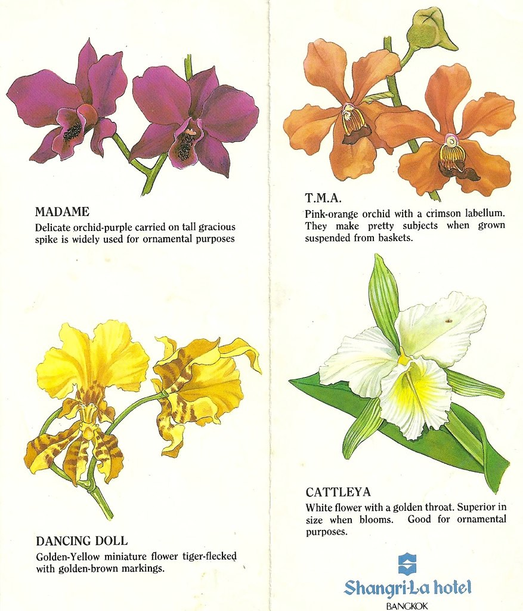

Flowers first appeared over 120 million years ago. The plant Archaefructus, found in ancient China,
is believed to be the first flowering plant. Archaefructus existed in the Cretaceous period, where
blossoming plants were extremely rare. This plant was believed to grow partially or fully submerged in water, and have a very simple structure. As plants evolved, these
flowers have become more plentiful and more intricate. Today, over 80% of green plants go through flowering stages.
Flowers first started being used for decorative purposes in Ancient Egypt. Hieroglyphics show depictions of flower arrangements- dating all the way back to 2500 BCE. They used
these arrangements for all types of gatherings. These traditions have carried on, and flowers are now a major part of
weddings, funerals, and celebrations of all kind.